2023年湖南卷化学高考真题
一、选择题：本题共14小题，每小题3分，共42分。在每小题给出的四个选项中，只有一项是符合题目要求的。
相关题目：第 1 题 · 第 2 题 · 第 3 题 · 第 4 题 · 第 5 题 · 第 6 题 · 第 7 题 · 第 8 题 · 第 9 题 · 第 10 题 · 第 11 题 · 第 12 题 · 第 13 题 · 第 14 题
返回原卷题型与计分
题目与已知条件
中华文化源远流长，化学与文化传承密不可分。下列说法错误的是
A. 青铜器“四羊方尊”的主要材质为合金
B. 长沙走马楼出土的竹木简牍主要成分是纤维素
C. 蔡伦采用碱液蒸煮制浆法造纸，该过程不涉及化学变化
D. 铜官窑彩瓷是以黏土为主要原料，经高温烧结而成
查看原题图／原始配图
读题与思路
青铜为合金、竹简主要纤维素、瓷器由黏土烧结均对。碱液蒸煮制浆使木质素等发生转化和脱除，不能说完全无化学变化，C错误。
分步解析
- 青铜为合金，竹木简牍主要含纤维素，黏土高温烧结可成陶瓷，A、B、D成立。
- 碱液蒸煮制浆使原料中的部分非纤维素组分发生化学变化、被溶解除去，C声称全过程不涉及化学变化错误。
检查与易错点
成纸的压榨、干燥可含物理过程，但不能因此否认制浆中的化学变化。
本题来源：paper2023 · doc-paper
返回原卷题型与计分
题目与已知条件
下列化学用语表述错误的是
A. HClO的电子式：
B. 中子数为10的氧原子：
C. NH3分子的VSEPR模型：
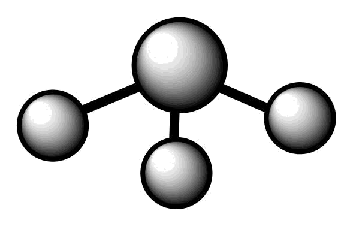
D. 基态N原子的价层电子排布图：
查看原题图／原始配图
所用高中知识
电子式、核素、VSEPR电子对构型、洪特规则。
读题与思路
NH₃有3键对和1孤对，VSEPR电子域模型应为四面体；题图只是三角锥分子形状，C错误。H—O—Cl各成键和孤对数正确，18O中子18−8=10，N为2s²2p³符合洪特规则。
分步解析
- HClO为H—O—Cl，O有两对孤电子、Cl有三对，A电子式正确。¹⁸₈O中子数18−8=10，B正确。
- NH₃有3个成键电子对和1对孤电子对，VSEPR电子对构型为四面体；图C只画三角锥分子形状，不能作为完整VSEPR模型，C错误。
- N基态价电子2s²2p³，三个p轨道先各占一个且自旋平行，D正确。
检查与易错点
氨分子的空间构型确为三角锥，但本题问的是VSEPR模型。
本题来源：paper2023 · doc-paper
返回原卷题型与计分
题目与已知条件
下列玻璃仪器在相应实验中选用不合理的是
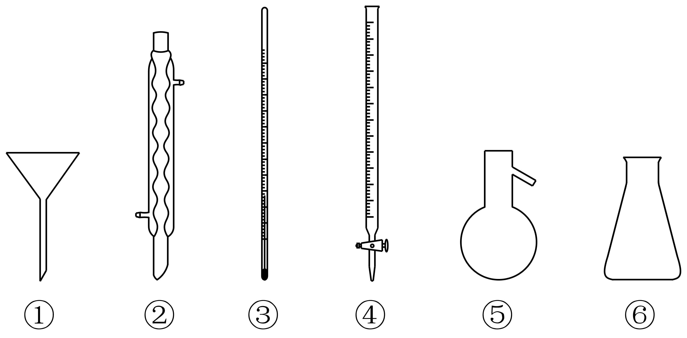
A. 重结晶法提纯苯甲酸：①②③ B.
蒸馏法分离CH2Cl2和CCl4：③⑤⑥
C. 浓硫酸催化乙醇制备乙烯：③⑤ D. 酸碱滴定法测定NaOH溶液浓度：④⑥
查看原题图／原始配图
读题与思路
苯甲酸重结晶要热溶、冷却结晶及过滤；球形回流冷凝管②不是该操作必需，A选用不合理。分馏两液体可用温度计/蒸馏烧瓶/锥瓶，制乙烯用温度计和蒸馏烧瓶，滴定NaOH可由酸式滴定管加标准酸至锥瓶。
分步解析
- 重结晶的溶解、过滤、冷却析晶不需要球形回流冷凝管，A把②列作选用器具不合理。
- 蒸馏CH₂Cl₂/CCl₄需要温度计、蒸馏烧瓶、接收容器，可用③⑤⑥，B合理。
- 乙醇在浓硫酸作用下加热制乙烯需要测温和加热容器③⑤；酸滴定NaOH可用酸式滴定管④和锥形瓶⑥，C、D合理。
检查与易错点
器具清单按题示选用，并不等于列出了整套实验的一切附件。
本题来源：paper2023 · doc-paper
返回原卷题型与计分
题目与已知条件
下列有关物质结构和性质的说法错误的是
A. 含有手性碳原子的分子叫做手性分子
B. 邻羟基苯甲醛的沸点低于对羟基苯甲醛的沸点
C. 酰胺在酸或碱存在并加热的条件下可发生水解反应
D.
冠醚(18-冠-6)的空穴与K+尺寸适配，两者能通过弱相互作用形成超分子
查看原题图／原始配图
所用高中知识
手性整体判断、分子内/间氢键、酰胺水解、冠醚配位。
读题与思路
含手性碳不保证整个分子手性，存在有对称面的内消旋体，因此A绝对化错误。邻羟基苯甲醛可分子内氢键而对位更多分子间缔合；酰胺可酸碱催化水解；18-冠-6与K⁺有尺寸匹配，均成立。
分步解析
- 含多个手性碳的分子可能有内部对称面，例如内消旋结构，整体不具手性，A过于绝对。
- 邻羟基苯甲醛易形成分子内氢键，削弱分子间缔合；对位主要形成分子间氢键，因此邻位沸点较低，B成立。
- 酰胺酸/碱性加热可水解；18-冠-6孔径适配K⁺，可经主客体弱相互作用形成超分子，C、D成立。
检查与易错点
判断手性分子看能否与镜像重合，不能只机械数手性碳。
本题来源：paper2023 · doc-paper
返回原卷题型与计分
题目与已知条件
下列有关电极方程式或离子方程式错误的是
A.
碱性锌锰电池的正极反应：MnO2+H2O+e-=MnO(OH)+OH-
B.
铅酸蓄电池充电时的阳极反应：Pb2++2H2O-2e-=PbO2+4H+
C.
K3[Fe(CN)6]溶液滴入FeCl2溶液中：K++Fe2++[Fe(CN)6]3-=KFe[Fe(CN)6]↓
D.
TiCl4加入水中：TiCl4+(x+2)H2O=TiO2·xH2O↓+4H++4Cl-
查看原题图／原始配图
所用高中知识
铅蓄电池、难溶盐、配合物沉淀和TiCl₄水解。
读题与思路
铅蓄电池充电阳极实际反应物是PbSO₄固体，不能把它任意拆成Pb²⁺，B式错误。MnO₂单电子还原、亚铁与铁氰根形成蓝色配合沉淀、TiCl₄水解的物料/电荷守恒均成立。
分步解析
- 碱性锌锰电池正极MnO₂+H₂O+e⁻→MnO(OH)+OH⁻配平正确。
- 铅蓄电池充电阳极应写PbSO₄+2H₂O→PbO₂+SO₄²⁻+4H⁺+2e⁻，而不是仅以Pb²⁺作反应物，B错误。
- C中K⁺、Fe²⁺和[Fe(CN)₆]³⁻形成电中性难溶物，电荷+1+2−3=0；TiCl₄水解为TiO₂·xH₂O并释放4H⁺、4Cl⁻，D原子、电荷也守恒。
检查与易错点
不能只看到Pb从+2变+4、失2e就判断正确，还要核介质中真实物种。
本题来源：paper2023 · doc-paper
返回原卷题型与计分
题目与已知条件
日光灯中用到的某种荧光粉的主要成分为3W3(ZX4)2·WY2。已知：X、Y、Z和W为原子序数依次增大的前20号元素，W为金属元素。基态X原子s轨道上的电子数和p轨道上的电子数相等，基态X、Y、Z原子的未成对电子数之比为2：1：3。下列说法正确的是
A. 电负性：X>Y>Z>W
B. 原子半径：X<Y<Z<W
C. Y和W的单质都能与水反应生成气体
D. Z元素最高价氧化物对应的水化物具有强氧化性
查看原题图／原始配图
所用高中知识
s/p电子数、未成对电子、周期律及单质与水反应。
读题与思路
X的s电子数=p电子数锁定O（4=4）；未成对数2:1:3结合序数锁定F/P，W=Ca，对应氟磷灰石组成。F₂与水生成O₂，Ca与水生成H₂，C正确。F电负性大于O，O半径大于F，H₃PO₄不具题说强氧化性。
分步解析
- O基态1s²2s²2p⁴，s电子4、p电子4且未成对2；Y未成对1，为F；Z未成对3且序数更大，为P；W为20号以内金属Ca。结构成3Ca₃(PO₄)₂·CaF₂。
- 电负性F>O，A的X>Y错误；同周期半径O>F，B的X<Y错误。
- F₂与水反应生成HF和O₂；Ca与水生成Ca(OH)₂和H₂，C成立。P的最高价酸H₃PO₄并不具有强氧化性，D错误。
检查与易错点
Y与水产生的气体是O₂，而W与水产生H₂，两反应不可机械类比。
本题来源：paper2023 · doc-paper
返回原卷题型与计分
题目与已知条件
取一定体积的两种试剂进行反应，改变两种试剂的滴加顺序(试剂浓度均为0.1 mol·L⁻¹)，反应现象没有明显差别的是
| 选项 |
试剂① |
试剂② |
| A |
氨水 |
AgNO₃溶液 |
| B |
NaOH溶液 |
Al₂(SO₄)₃溶液 |
| C |
H₂C₂O₄溶液 |
酸性KMnO₄溶液 |
| D |
KSCN溶液 |
FeCl₃溶液 |
A. A B. B C. C D. D
查看原题图／原始配图
所用高中知识
沉淀再溶、络合、氧化还原颜色与显色反应。
读题与思路
氨/Ag⁺和OH⁻/Al³⁺因过量配体或碱而有先沉后溶/先不沉的区别；草酸与紫色高锰酸钾倒加的显色历程不同。Fe³⁺与SCN⁻无论顺序均出现红色配合物，D最合。
分步解析
- 氨水加AgNO₃先可沉淀后溶于过量NH₃，反向可能持续形成银氨配合物；Al³⁺与OH⁻也因两性沉淀而出现先沉后溶或无沉淀的差别。
- 草酸与酸性KMnO₄的滴加顺序影响紫色是否持续、何时褪去，C有可见差异。
- KSCN与FeCl₃无论先后都会形成红色铁硫氰酸配合物，没有上述先沉后溶或氧化剂显色差异，D符合。
检查与易错点
题目问“没有明显差别”，并非要求所有时刻离子浓度完全相同。
本题来源：paper2023 · doc-paper
返回原卷题型与计分
题目与已知条件
葡萄糖酸钙是一种重要的补钙剂，工业上以葡萄糖、碳酸钙为原料，在溴化钠溶液中采用间接电氧化反应制备葡萄糖酸钙，其阳极区反应过程如下：
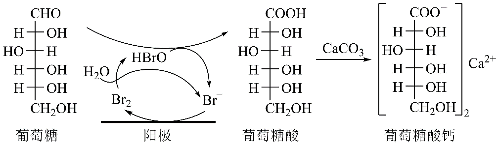
下列说法错误的是
A. 溴化钠起催化和导电作用
B.
每生成1 mol葡萄糖酸钙，理论上电路中转移了2 mol电子
C. 葡萄糖酸能通过分子内反应生成含有六元环状结构的产物
D. 葡萄糖能发生氧化、还原、取代、加成和消去反应
查看原题图／原始配图
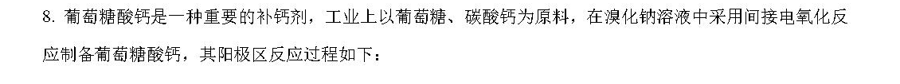
原始配图 1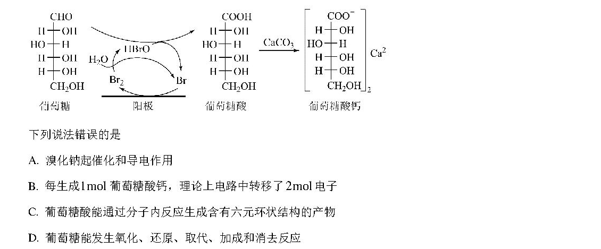
原始配图 2所用高中知识
氧化还原介体、醛氧化、钙盐计量与内酯。
读题与思路
每个葡萄糖醛基变羧基失2e，1mol葡萄糖酸钙含2个葡萄糖酸根，需4mol电子而非2，B错误。Br⁻电氧化又化学还原循环，兼催化/导电；葡萄糖酸可羟基与羧基分子内酯化成六元环；葡萄糖多官能团可发生其余列举反应。
分步解析
- Br⁻在阳极被氧化，经Br₂/HBrO氧化葡萄糖后又回到Br⁻，是循环介体并提供离子导电，A正确。
- 每个葡萄糖醛基氧化为羧基失2e⁻；每mol Ca(C₆H₁₁O₇)₂需2 mol葡萄糖，转移4 mol电子，B给2错误。
- 葡萄糖酸含羧基和多个羟基，可分子内酯化形成六元环内酯；葡萄糖有羟基、醛基，可发生所列氧化、还原、取代、加成及适当条件下的消去，C、D成立。
检查与易错点
产物的Ca²⁺为+2，需要两个单负电荷葡萄糖酸根，不能把钙盐当1∶1盐。
本题来源：paper2023 · doc-paper
返回原卷题型与计分
题目与已知条件
处理某铜冶金污水(含Cu²⁺、Fe³⁺、Zn²⁺、Al³⁺)的部分流程如下：
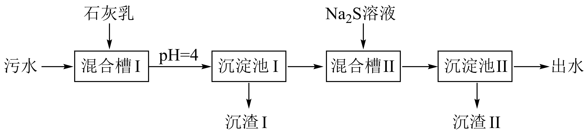
已知：①溶液中金属离子开始沉淀和完全沉淀的pH如下表所示：
| 物质 |
Fe(OH)₃ |
Cu(OH)₂ |
Zn(OH)₂ |
Al(OH)₃ |
| 开始沉淀pH |
1.9 |
4.2 |
6.2 |
3.5 |
| 完全沉淀pH |
3.2 |
5.7 |
8.2 |
4.6 |
②Ksp(CuS)=6.4×10⁻³⁶，Ksp(ZnS)=1.6×10⁻²⁴。
下列说法错误的是
A. “沉渣Ⅰ”中含有Fe(OH)₃和Al(OH)₃
B. Na₂S溶液呈碱性，其主要原因是S²⁻+H₂O⇌HS⁻+OH⁻
C. “沉淀池Ⅱ”中，当Cu²⁺和Zn²⁺完全沉淀时，溶液中=4.0×10⁻¹²
D. “出水”经阴离子交换树脂软化处理后，可用作工业冷却循环用水
查看原题图／原始配图
所用高中知识
按pH沉淀、硫化物Ksp、盐水解和软化。
读题与思路
pH4已全沉Fe(OH)₃并部分沉Al(OH)₃；S²⁻水解碱性；共存CuS/ZnS时游离金属比为KspCuS/KspZnS=4×10⁻¹²。软化水要除Ca²⁺、Mg²⁺等阳离子，不能用阴离子树脂代替，D错误。
分步解析
- pH=4时Fe³⁺已沉淀完全，Al³⁺开始但未完全沉淀，沉渣Ⅰ含Fe(OH)₃和Al(OH)₃，A成立。
- Na₂S中S²⁻水解S²⁻+H₂O⇌HS⁻+OH⁻，呈碱性，B成立。
- 同时与CuS、ZnS平衡，c(Cu²⁺)/c(Zn²⁺)=Ksp(CuS)/Ksp(ZnS)=6.4×10⁻³⁶/(1.6×10⁻²⁴)=4.0×10⁻¹²，C正确。
- 去除水硬度需阳离子交换树脂；D所写阴离子交换树脂不能单独除Ca²⁺、Mg²⁺，错误。
检查与易错点
共用同一c(S²⁻)才能约去；不同溶液、不同pH中不可直接比两金属离子浓度。
本题来源：paper2023 · doc-paper
返回原卷题型与计分
题目与已知条件
油画创作通常需要用到多种无机颜料。研究发现，在不同的空气湿度和光照条件下，颜料雌黄（As₂S₃）褪色的主要原因是发生了以下两种化学反应：
| 反应 | 转化 | 条件 |
|---|
| Ⅰ | As₂S₃(s) → As₂O₃+H₂S₂O₃ | 空气，紫外光 |
| Ⅱ | As₂S₃(s) → H₃AsO₄+H₂SO₄ | 空气，自然光 |
下列说法正确的是
A. S₂O₃²⁻和SO₄²⁻的空间结构都是正四面体形
B. 反应Ⅰ和Ⅱ中，元素As和S都被氧化
C. 反应Ⅰ和Ⅱ中，参加反应的：Ⅰ<Ⅱ
D. 反应Ⅰ和Ⅱ中，氧化1 mol As₂S₃转移的电子数之比为3∶7
查看原题图／原始配图
原始配图 1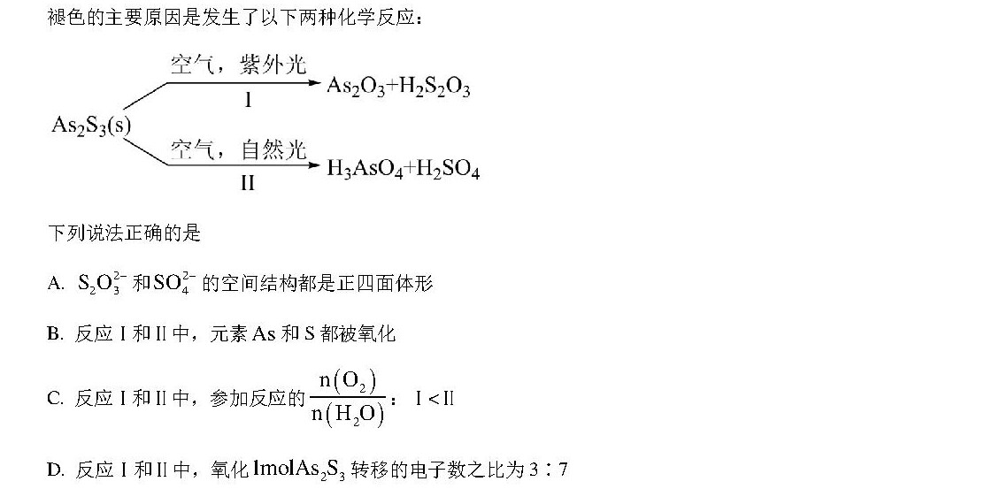
原始配图 2 读题与思路
Ⅰ中As仍+3，只有S被氧化；ⅡAs和S都氧化，B不成立。S₂O₃²⁻一个顶点为S而另三为O，不是四个相同顶点的正四面体，A不严谨。Ⅰ配平2As₂S₃+6O₂+3H₂O→2As₂O₃+3H₂S₂O₃，O₂/H₂O=2；Ⅱ为As₂S₃+7O₂+6H₂O→2H₃AsO₄+3H₂SO₄，比7/6，C方向反。每mol转移12与28e，比3:7，D正确。
分步解析
- Ⅰ可写2As₂S₃+6O₂+3H₂O→2As₂O₃+3H₂S₂O₃。As仍+3不变，S平均−2升至+2，每mol As₂S₃失12 mol电子。
- Ⅱ为As₂S₃+7O₂+6H₂O→2H₃AsO₄+3H₂SO₄。As共失4e，三个S共失24e，总28e。电子数之比12∶28=3∶7，D正确。
- S₂O₃²⁻中周围3O和1S不相同，不是正四面体；Ⅰ中As不氧化；O₂/H₂O的比Ⅰ=2、Ⅱ=7/6，应Ⅰ>Ⅱ，A、B、C均不成立。
检查与易错点
硫代硫酸根两个S不等价，可用平均氧化数核总电子；不能把它们都当+6。
本题来源：paper2023 · doc-paper
返回原卷题型与计分
题目与已知条件
科学家合成了一种高温超导材料，其晶胞结构如图所示，该立方晶胞参数为a pm。阿伏加德罗常数的值为NA。下列说法错误的是
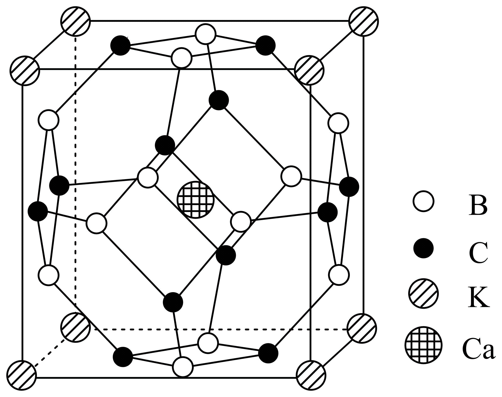
A. 晶体最简化学式为KCaB₆C₆
B. 晶体中与K⁺最近且距离相等的Ca²⁺有8个
C. 晶胞中B和C原子构成的多面体有12个面
D. 晶体的密度为 g·cm⁻³
查看原题图／原始配图
读题与思路
K角均摊1、Ca体心1、B/C面上均摊各6，式KCaB₆C₆。K周围8个邻胞体心Ca；B/C骨架是6四边形加8六边形共14面，不是12，C错误。式量217、a pm=a×10⁻¹⁰cm，密度217×10³⁰/(a³NA)正为D。
分步解析
- K在8顶点，贡献1；Ca在体心1。B、C依图跨边界均摊后各6，最简式KCaB₆C₆，A正确。
- 每个顶点K⁺相邻8个晶胞的体心Ca²⁺，距离相同，B正确。
- 图中B/C构成的笼为14面体（6个四边形面及8个六边形面），并非12个面，C错误。
- 每胞式量39+40+6×11+6×12=217；体积a³×10⁻³⁰ cm³，ρ=217×10³⁰/(a³Nₐ)=2.17×10³²/(a³Nₐ) g·cm⁻³，D正确。
检查与易错点
完整笼的顶点数不能直接当作每晶胞原子数，位于晶胞边界还需均摊。
本题来源：paper2023 · doc-paper
返回原卷题型与计分
题目与已知条件
常温下，用浓度为0.0200 mol·L⁻¹的NaOH标准溶液滴定浓度均为0.0200 mol·L⁻¹的HCl和CH₃COOH的混合溶液，滴定过程中溶液的pH随η(η=)的变化曲线如图所示。下列说法错误的是
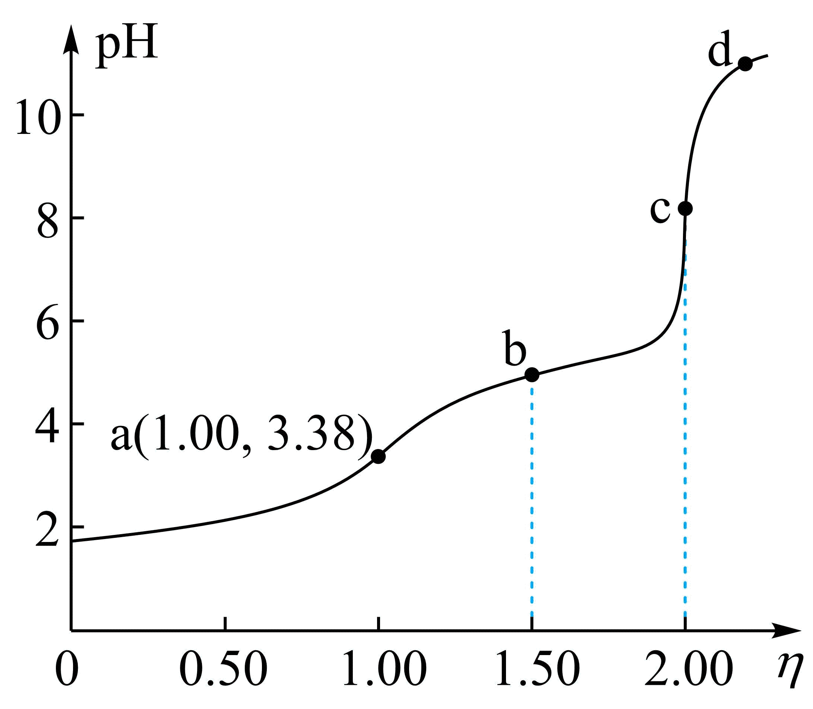
A. Ka(CH₃COOH)约为10−4.76
B. 点a：c(Na⁺)=c(Cl⁻)=c(CH₃COO⁻)+c(CH₃COOH)
C. 点b：c(CH₃COOH)<c(CH₃COO⁻)
D. 水的电离程度：a<b<c<d
查看原题图／原始配图
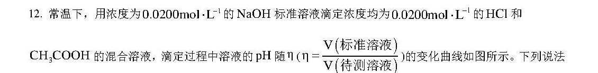
原始配图 1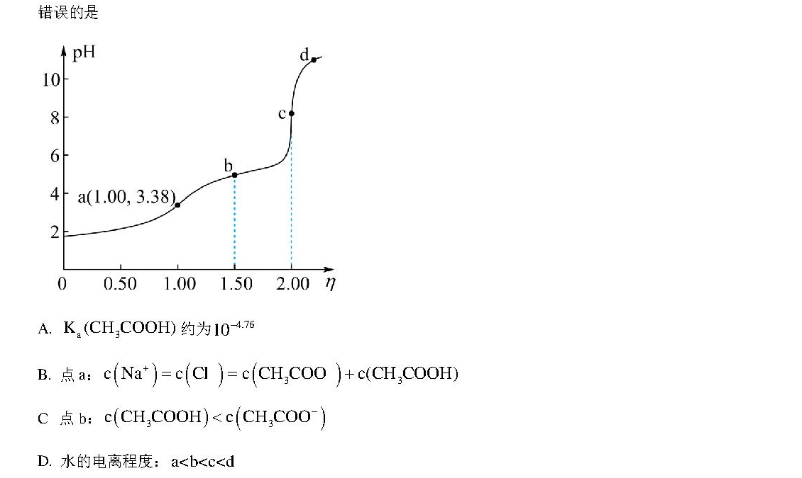
原始配图 2所用高中知识
滴定比例、弱酸Ka、物料电荷守恒、水电离。
读题与思路
a点恰中和HCl，醋酸分析浓度0.0100M，由pH3.38得Ka≈(10⁻³·³⁸)²/0.01≈10⁻⁴·⁷⁶。Na/Cl/醋酸总量相等支持B。b名义酸盐各半，但酸性下H⁺多于OH⁻，电荷守恒令乙酸根略多于醋酸。d过量NaOH抑制水电离，不能从a到d单调增加，D错。
分步解析
- a点η=1，原0.0200 mol·L⁻¹醋酸被稀释一倍至0.0100 mol·L⁻¹。pH3.38给c(H⁺)≈10⁻³·³⁸，弱酸近似Ka≈c(H⁺)²/0.0100≈10⁻⁴·⁷⁶，A成立。
- a点Na⁺、Cl⁻与总醋酸浓度均0.0100 mol·L⁻¹，B为物料守恒。b点名义上中和一半醋酸，但电离使c(CH₃COO⁻)略多于c(CH₃COOH)，C成立。
- a点酸抑制水电离，接近c点转为醋酸钠水解促进水电离；d点NaOH过量又抑制水电离。因此水电离不可能始终按a<b<c<d增大，D错误。
检查与易错点
水电离程度与总c(H⁺)或总c(OH⁻)不能直接等同；过量碱的OH⁻主要来自溶质。
本题来源：paper2023 · doc-paper
返回原卷题型与计分
题目与已知条件
向一恒容密闭容器中加入1 mol CH₄和一定量的H₂O，发生反应：
CH₄(g)+H₂O(g) ⇌ CO(g)+3H₂(g)。CH₄的平衡转化率按不同投料比x〔x=n(CH₄)/n(H₂O)〕随温度的变化曲线如图所示。下列说法错误的是
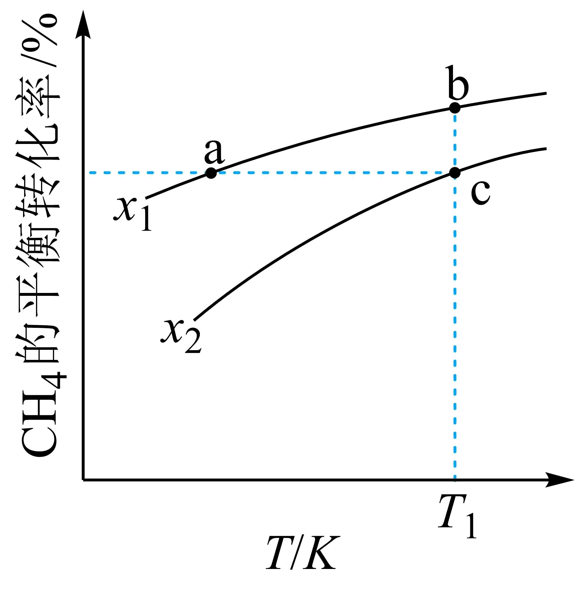
A．x₁<x₂
B．反应速率：vb正<vc正
C．点a、b、c对应的平衡常数：Kₐ<Kb=Kc
D．反应温度为T₁，当容器内压强不变时，反应达到平衡状态
查看原题图／原始配图
原始配图 1
所用高中知识
投料比、吸热平衡、正逆速率和平衡标志。
读题与思路
增大水投料使甲烷转化更高，曲线上方x₁更小。b/c同温且均平衡，K相等；b转化更多，CO和H₂浓度更高，逆反应速率更大，正速率也相等地更大，故B方向错。温度升高转化增加为吸热；恒容气体计量数增加，压强稳定可判平衡。
分步解析
- 投料比x=n(CH₄)/n(H₂O)越小，水越多，CH₄平衡转化率越高，故x₁<x₂，A成立。
- 在T₁下b比c甲烷转化更多，CO、H₂浓度更高，逆向反应更快；两点都平衡，v正=v逆，因此vb正>vc正，B所列小于号错误。
- 升温使转化率增大，正反应吸热，Ka<Kb=Kc，C正确。反应前后气体量增加，固定温度、体积下压强恒定表示反应进度不再净改变，可作平衡标志，D正确。
检查与易错点
两曲线温度相同但起始水量不同，不能直接说b的反应物浓度全都更高；借平衡的逆向速率比较更直接。
本题来源：paper2023 · doc-paper
返回原卷题型与计分
题目与已知条件
N₂H₄是一种强还原性的高能物质，在航天、能源等领域有广泛应用。我国科学家合成的某Ru(Ⅱ)催化剂(用[L−Ru−NH₃]⁺表示)能高效电催化氧化NH₃合成N₂H₄，其反应机理如图所示。
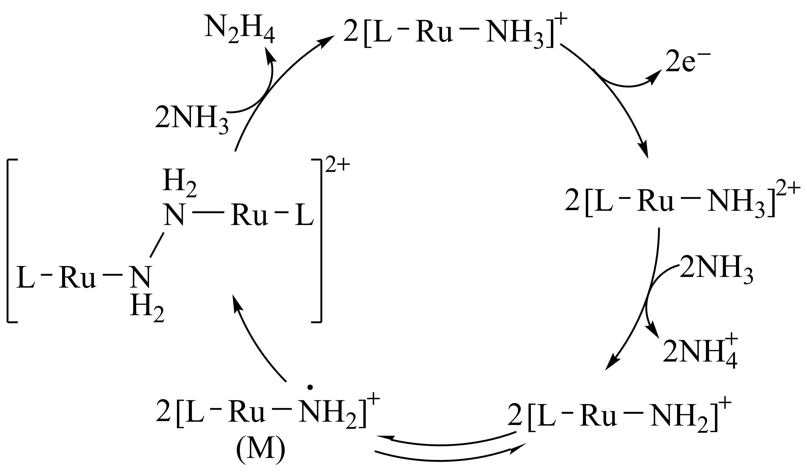
下列说法错误的是
A. Ru(Ⅱ)被氧化至Ru(Ⅲ)后，配体NH₃失去质子能力增强
B. M中Ru的化合价为+3
C. 该过程有非极性键的形成
D. 该过程的总反应式：4NH₃−2e⁻=N₂H₄+2NH₄⁺
查看原题图／原始配图
所用高中知识
配体去质子化、金属与配体间电子转移、自由基和电荷守恒。
读题与思路
初始Ru(Ⅱ)配合物加一正电荷对应Ru(Ⅲ)，增强NH₃酸性。M的NH₂带自由基点，属于中性氨基自由基而不是NH₂⁻，该步是配体向Ru电子转移，Ru回到+2，所以B错误。两NH₂成N—N非极性键；总式4NH₃→N₂H₄+2NH₄⁺+2e正确。
分步解析
- Ru(Ⅱ)先氧化为Ru(Ⅲ)后，更易使配位NH₃失去H⁺，A符合循环。
- Ru(Ⅲ)—NH₂⁻到M经过配体向金属电子转移，得到Ru(Ⅱ)—NH₂·；所以M中Ru不是+3，B错误。
- 两个氨基片段生成N—N，属于非极性共价键，C正确。消去循环物种，4NH₃→N₂H₄+2NH₄⁺+2e⁻，D原子与电荷守恒。
检查与易错点
必须看到自由基点号。总式N4、H12守恒，右边+2−2=0与左边相同。
本题来源：paper2023 · doc-paper
返回非选择题说明
题目与已知条件
金属Ni对H₂有强吸附作用，被广泛用于硝基或羰基等不饱和基团的催化氢化反应，将块状Ni转化成多孔型雷尼Ni后，其催化活性显著提高。
已知：①雷尼Ni暴露在空气中可以自燃，在制备和使用时，需用水或有机溶剂保持其表面“湿润”；
②邻硝基苯胺在极性有机溶剂中更有利于反应的进行。
某实验小组制备雷尼Ni并探究其催化氢化性能的实验如下：
步骤1：雷尼Ni的制备
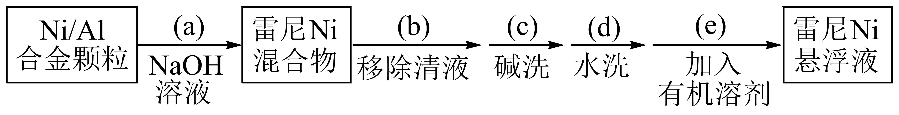
步骤2：邻硝基苯胺的催化氢化反应
反应的原理和实验装置图如下(夹持装置和搅拌装置略)。装置Ⅰ用于储存H₂和监测反应过程。
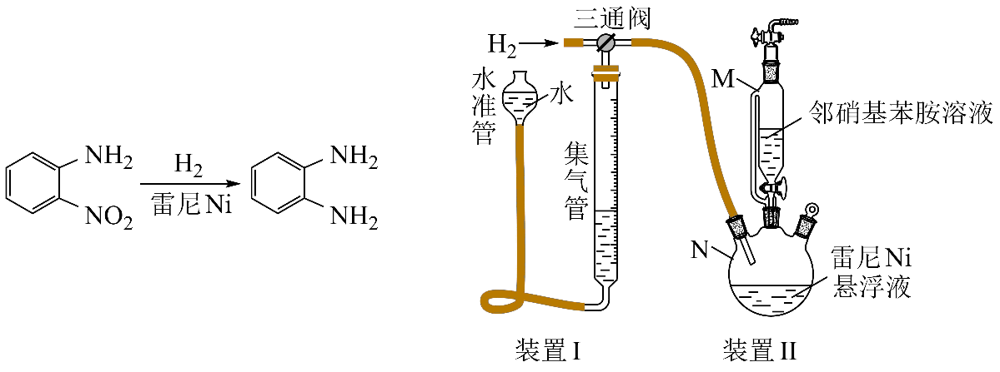
回答下列问题：
（1）操作(a)中，反应的离子方程式是_______；
（2）操作(d)中，判断雷尼Ni被水洗净的方法是_______；
（3）操作(e)中，下列溶剂中最有利于步骤2中氢化反应的是_______；
A. 丙酮 B. 四氯化碳 C. 乙醇 D. 正己烷
（4）向集气管中充入H₂时，三通阀的孔路位置如下图所示：发生氢化反应时，集气管向装置Ⅱ供气，此时孔路位置需调节为_______；
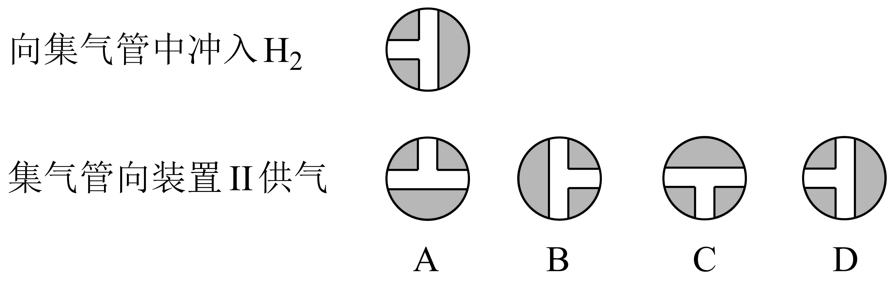
（5）仪器M的名称是_______；
（6）反应前应向装置Ⅱ中通入N₂一段时间，目的是_______；
（7）如果将三颈瓶N中的导气管口插入液面以下，可能导致的后果是_______；
（8）判断氢化反应完全的现象是_______。
查看原题图／原始配图
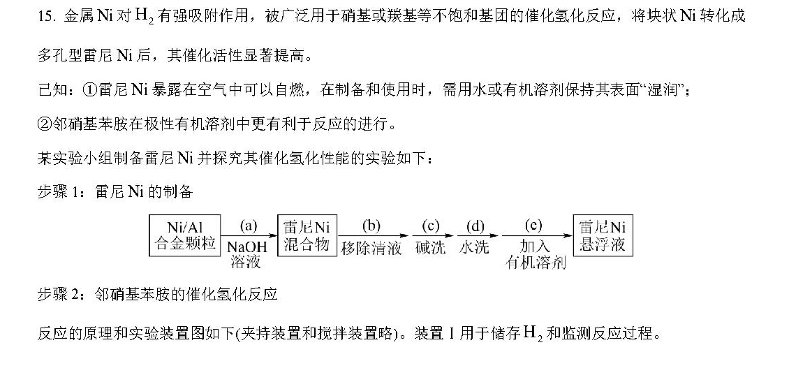
原始配图 1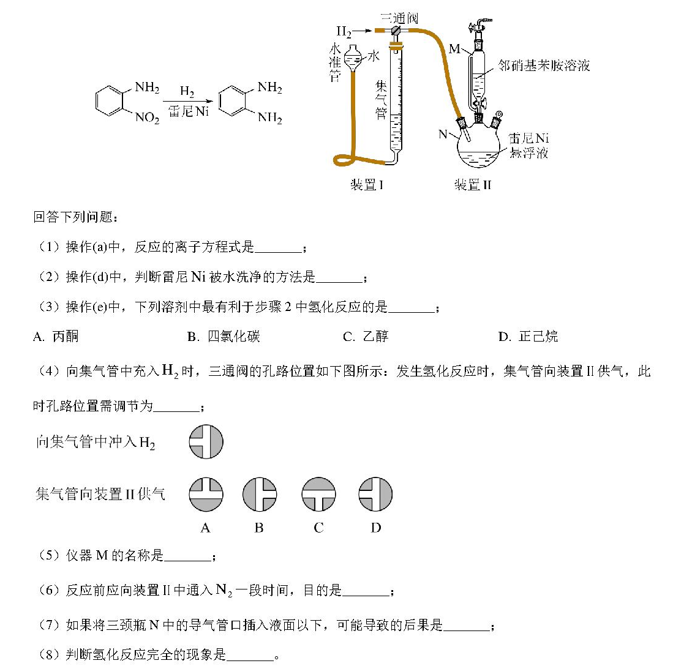
原始配图 2所用高中知识
铝碱反应、洗涤检验、极性溶剂、三通阀和防自燃。
读题与思路
Al选择性碱溶按2Al+2OH⁻+2H₂O→2AlO₂⁻+3H₂。末次水洗液pH近中性或加酚酞不红；选乙醇满足极性且不易被目标氢化，丙酮会竞争还原。阀需连通下方集气管和右方反应器、堵左气源，选B；M为恒压滴液漏斗。N₂排空气防雷尼Ni自燃及氢氧混合；气管入液会造成波动/倒吸风险，稳态液面不再改变表示耗氢停止。
分步解析
- （1）选择性溶解Al：2Al+2OH⁻+2H₂O→2AlO₂⁻+3H₂↑，留下多孔Ni。也可用Al(OH)₄⁻形式：2Al+2OH⁻+6H₂O→2Al(OH)₄⁻+3H₂。
- （2）取末次洗液滴加酚酞不变红，或测pH接近中性，说明已洗去残余碱。（3）选乙醇C：极性溶剂利于邻硝基苯胺溶解；丙酮可被氢化，CCl₄和正己烷极性不合题意，且CCl₄不适合该还原体系。
- （4）供气时应断开外部H₂口、连通集气管与装置Ⅱ，阀芯选择B。（5）M为恒压滴液漏斗，平衡上下压强使滴加稳定。
- （6）先通N₂排空气，避免雷尼Ni接触氧而自燃，也避免H₂与空气形成危险混合物。（7）导气管插到液下会鼓泡、气流/压强波动，不利于以集气管液面稳定追踪耗氢，还可能引起液体倒流。
- （8）在其他条件稳定且供气通路正常时，集气管液面不再改变，表示不再净消耗H₂，可判反应完成。
答案
（1）2Al+2OH⁻+2H₂O ══ 2AlO₂⁻+3H₂↑。（2）取最后一次洗涤液，滴加酚酞，溶液不变红，说明已洗净。（3）C。（4）B。（5）恒压滴液漏斗。（6）排出装置中的空气，防止雷尼Ni自燃。（7）管道中气流不稳，不利于监测反应过程。（8）集气管中液面不再改变。
检查与易错点
不应把雷尼Ni烘干来“洗净”；其表面需保持湿润。液面停动需排除漏气、堵塞或催化剂失活等非正常情况，按题设正常运行判断。
本题来源：paper2023 · doc-paper
返回非选择题说明
题目与已知条件
聚苯乙烯是一类重要的高分子材料，可通过苯乙烯聚合制得。
Ⅰ．苯乙烯的制备
（1）已知下列反应的热化学方程式：
①C₆H₅C₂H₅(g)+21/2 O₂(g)=8CO₂(g)+5H₂O(g) ΔH₁=−4386.9 kJ·mol⁻¹
②C₆H₅CH=CH₂(g)+10O₂(g)=8CO₂(g)+4H₂O(g) ΔH₂=−4263.1 kJ·mol⁻¹
③H₂(g)+½O₂(g)=H₂O(g) ΔH₃=−241.8 kJ·mol⁻¹
计算反应④C₆H₅C₂H₅(g) ⇌ C₆H₅CH=CH₂(g)+H₂(g)的ΔH₄=________ kJ·mol⁻¹；
（2）在某温度、100 kPa下，向反应器中充入1 mol气态乙苯发生反应④，其平衡转化率为50%，欲将平衡转化率提高至75%，需要向反应器中充入________ mol水蒸气作为稀释气（计算时忽略副反应）；
（3）在913 K、100 kPa下，以水蒸气作稀释气，Fe₂O₃作催化剂，乙苯除脱氢生成苯乙烯外，还会发生如下两个副反应：
⑤C₆H₅C₂H₅(g) ⇌ C₆H₆(g)+CH₂=CH₂(g)
⑥C₆H₅C₂H₅(g)+H₂(g) ⇌ C₆H₅CH₃(g)+CH₄(g)
以上反应体系中，芳香烃产物苯乙烯、苯和甲苯的选择性S〔S=（转化为目的产物所消耗乙苯的量）/（已转化的乙苯总量）×100%〕随乙苯转化率的变化曲线如图所示，其中曲线b代表的产物是________，理由是________；
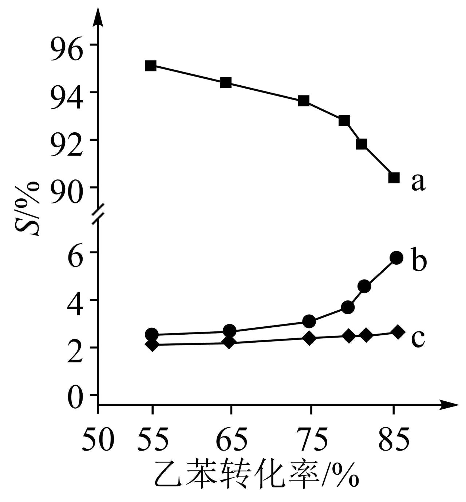
（4）关于本反应体系中催化剂Fe₂O₃的描述错误的是________；
A．X射线衍射技术可测定Fe₂O₃晶体结构
B．Fe₂O₃可改变乙苯平衡转化率
C．Fe₂O₃降低了乙苯脱氢反应的活化能
D．改变Fe₂O₃颗粒大小不影响反应速率
Ⅱ．苯乙烯的聚合
苯乙烯聚合有多种方法，其中一种方法的关键步骤是某Cu(Ⅰ)的配合物促进C₆H₅CH₂X（引发剂，X表示卤素）生成自由基C₆H₅CH₂·，实现苯乙烯可控聚合。
（5）引发剂C₆H₅CH₂Cl、C₆H₅CH₂Br、C₆H₅CH₂I中活性最高的是________；
（6）室温下，①Cu⁺在配体L的水溶液中形成[Cu(L)₂]⁺，其反应平衡常数为K；②CuBr在水中的溶度积常数为Ksp。由此可知，CuBr在配体L的水溶液中溶解反应的平衡常数为________（所有方程式中计量系数关系均为最简整数比）。
查看原题图／原始配图
原始配图 1
所用高中知识
盖斯定律、恒压惰性气稀释、反应选择性、均裂模型、平衡相加。
读题与思路
盖斯①−②−③得118.0kJ/mol。恒压脱氢Kp=100α²/[(1−α)(1+α+n水)]；α=.5时100/3，代α=.75解n=5。题设以水蒸气为稀释气，恒温恒压下增大稀释使转化率升高，气体分子数增大的副反应⑤随之正移，b为苯。催化剂不改平衡、粒径影响表面，BD错误。引发步骤是C—X键均裂生成苄自由基，C—I键能最小，苄碘活性最高。CuBr溶解与配位平衡相加，常数K·Ksp。
分步解析
- （1）目标反应④=①−②−③。ΔH₄=−4386.9−(−4263.1)−(−241.8)=+118.0 kJ·mol⁻¹。若来源数值②仅写−4263，保留到整数亦为+118。
- （2）忽略副反应，初始乙苯1 mol、转化率α，总量1+α+n（水蒸气）。Kp=100α²/[(1−α)(1+α+n)]。最初α=0.50、n=0，Kp=100/3 kPa；目标α=0.75，100×0.75²/[0.25(1.75+n)]=100/3，得n=5.00 mol。
- （3）曲线a选择性最大，为主反应④的产物苯乙烯。题设在913 K、100 kPa下以水蒸气作稀释气：恒温恒压下增大水蒸气比例相当于减小各反应气体的分压，乙苯转化率随之增大；副反应⑤气体分子数增大，平衡正向移动，苯的选择性明显增大；副反应⑥前后气体分子数相等，平衡不受稀释影响。故随转化率增大而明显上升的曲线b代表苯。
- （4）X射线衍射可定晶体结构，催化剂降低活化能，A、C成立；催化剂不能改平衡转化率，颗粒大小可改表面积与速率，错误为BD。
- （5）引发剂的作用是在Cu(Ⅰ)配合物作用下使C—X键均裂生成C₆H₅CH₂·。卤素原子半径Cl
- （6）CuBr(s)⇌Cu⁺+Br⁻，Ksp；Cu⁺+2L⇌[Cu(L)₂]⁺，K。相加得CuBr+2L⇌[Cu(L)₂]⁺+Br⁻，平衡常数为K·Ksp。
答案
（1）+118 kJ·mol⁻¹。（2）5。（3）苯；反应④为主反应，⑤⑥为副反应；在恒温恒压下以水蒸气稀释提高乙苯转化率时，气体分子数增大的反应⑤平衡正向移动，而反应⑥气体分子数不变、不受稀释影响，故苯的选择性随转化率增大而明显增大。（4）BD。（5）C₆H₅CH₂I（C—I键最弱，最易均裂生成C₆H₅CH₂·）。（6）K·Ksp。
检查与易错点
催化剂只改变速率、不改变平衡转化率；均裂生成自由基看键能大小，不能把“键极性越大”等同于越易生成自由基。
本题来源：paper2023 · reference2023 · debate2023 · doc-paper
返回非选择题说明
题目与已知条件
超纯Ga(CH₃)₃是制备第三代半导体的支撑源材料之一，近年来，我国科技工作者开发了超纯纯化、超纯分析和超纯灌装一系列高新技术，在研制超纯Ga(CH₃)₃方面取得了显著成果，工业上以粗镓为原料，制备超纯Ga(CH₃)₃的工艺流程如下：
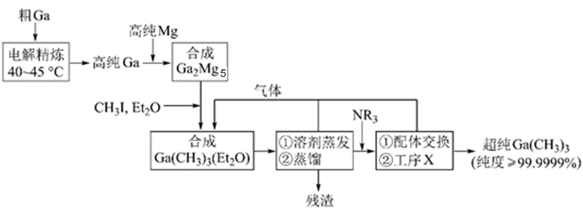
已知：①金属Ga的化学性质和Al相似，Ga的熔点为29.8 ℃；
②Et₂O(乙醚)和NR₃(三正辛胺)在上述流程中可作为配体；
③相关物质的沸点：
| 物质 |
Ga(CH₃)₃ |
Et₂O |
CH₃I |
NR₃ |
| 沸点/℃ |
55.7 |
34.6 |
42.4 |
365.8 |
回答下列问题：
（1）晶体Ga(CH₃)₃的晶体类型是_______；
（2）“电解精炼”装置如图所示，电解池温度控制在40～45 ℃的原因是_______，阴极的电极反应式为_______；
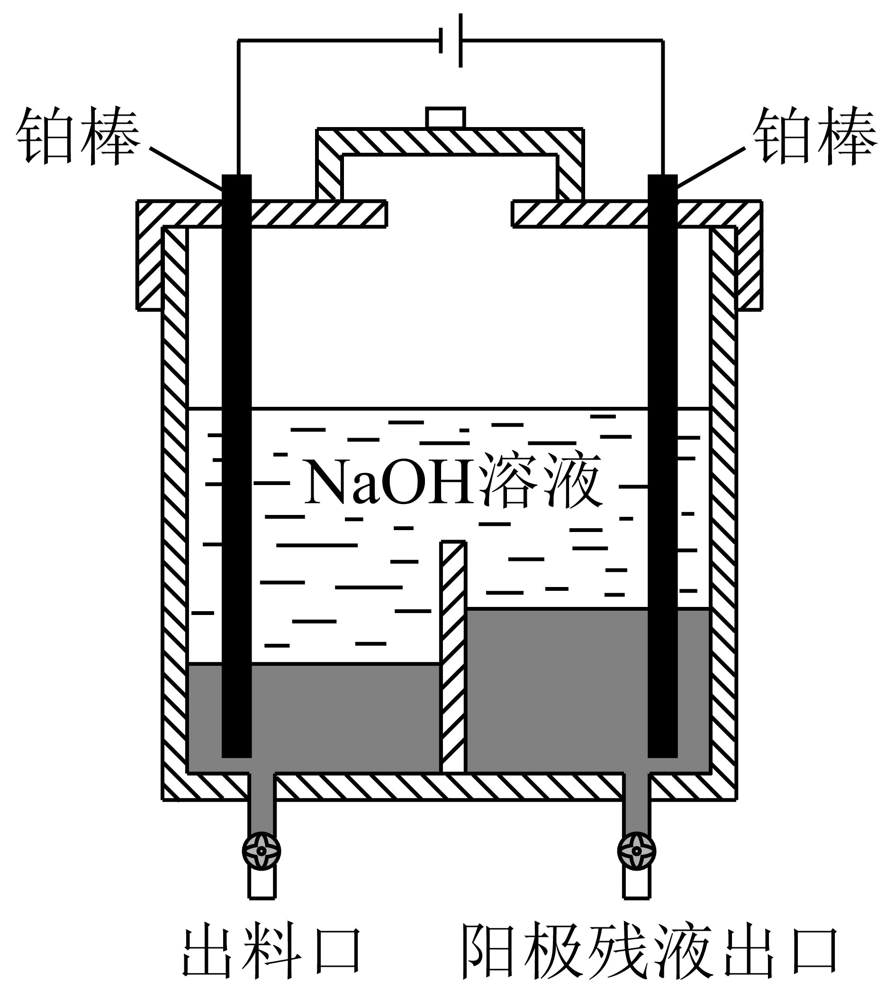
（3）“合成Ga(CH₃)₃(Et₂O)”工序中的产物还包括MgI₂和CH₃MgI，写出该反应的化学方程式：_______；
（4）“残渣”经纯水处理，能产生可燃性气体，该气体主要成分是_______；
（5）下列说法错误的是_______；
A. 流程中Et₂O得到了循环利用
B. 流程中，“合成Ga₂Mg₅”至“工序X”需在无水无氧的条件下进行
C. “工序X”的作用是解配Ga(CH₃)₃(NR₃)，并蒸出Ga(CH₃)₃
D. 用核磁共振氢谱不能区分Ga(CH₃)₃和CH₃I
（6）直接分解Ga(CH₃)₃(Et₂O)不能制备超纯Ga(CH₃)₃，而本流程采用“配体交换”工艺制备超纯Ga(CH₃)₃的理由是_______；
（7）比较分子中的C−Ga−C键角大小：Ga(CH₃)₃_______Ga(CH₃)₃(Et₂O)(填“>”“<”或“=”)，其原因是_______。
查看原题图／原始配图
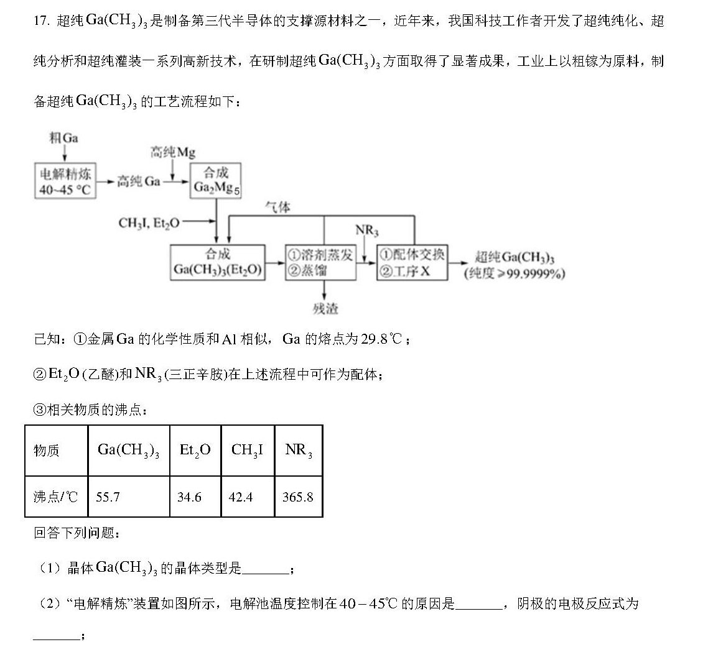
原始配图 1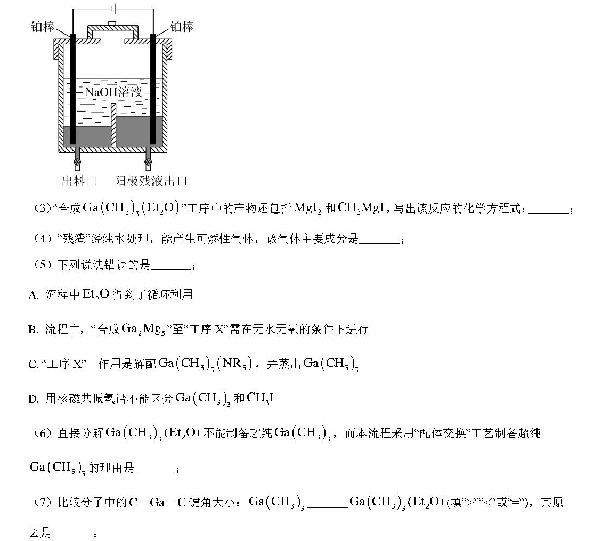
原始配图 2所用高中知识
分子晶体、碱性介质电解、复杂配平、格氏试剂水解、配体置换与蒸馏。
读题与思路
低沸点三甲基镓为分子晶体；40–45 ℃高于Ga熔点便于液态出料；NaOH阴极可写Ga(OH)₄⁻+3e→Ga+4OH⁻。依图Ga₂Mg₅和两副产物联立守恒得Ga₂Mg₅+8CH₃I+2Et₂O→2Ga(CH₃)₃(Et₂O)+3MgI₂+2CH₃MgI。后者水解放CH₄。虽然两物各一组H峰，化学位移不同，D错误。用高沸NR₃代低沸乙醚利于蒸馏分离；Ga由三配位近120°变四配位近109.5°，前者键角大。
分步解析
- （1）Ga(CH₃)₃沸点低、由离散分子构成，属于分子晶体。（2）Ga熔点29.8 ℃，控制40—45 ℃使其为液体，便于从出料口排出。
- NaOH介质中Ga(Ⅲ)以含氧配阴离子存在，阴极可写GaO₂⁻+2H₂O+3e⁻→Ga+4OH⁻；或Ga(OH)₄⁻+3e⁻→Ga+4OH⁻。若只写Ga³⁺+3e⁻→Ga只是形式价态式，没体现碱性实际物种。
- （3）Ga₂Mg₅+8CH₃I+2Et₂O→2Ga(CH₃)₃(Et₂O)+3MgI₂+2CH₃MgI。Ga两端2；Mg两端5；8个甲基=6+2；I8=6+2；乙醚2份完整配位，C/H/O也守恒。
- （4）残渣CH₃MgI遇水：CH₃MgI+H₂O→CH₄↑+Mg(OH)I，主要可燃气体CH₄。
- （5）Et₂O可循环；相关金属有机物遇水氧反应，需无水无氧；工序X解配并蒸出Ga(CH₃)₃。Ga(CH₃)₃与CH₃I虽都可各给一组氢谱峰，但化学位移不同，可区别，所以错误为D。
- （6）Et₂O沸点34.6 ℃比Ga(CH₃)₃的55.7 ℃低，直接解配时容易与目标一起进入气相。换成高沸点NR₃（365.8 ℃）后，可使其留下而把三甲基镓蒸出，提高分离纯度。
- （7）自由Ga(CH₃)₃中Ga为三配位、近sp²平面三角形，C—Ga—C约120°；乙醚配位后为四配位、近sp³四面体，键角较小，前者大于后者。
答案
（1）分子晶体。（2）保证Ga为液体，便于纯Ga流出；Ga(OH)₄⁻+3e⁻ ══ Ga+4OH⁻（也可简写为Ga³⁺+3e⁻ ══ Ga）。（3）Ga₂Mg₅+8CH₃I+2Et₂O→2Ga(CH₃)₃(Et₂O)+3MgI₂+2CH₃MgI。（4）CH₄。（5）D。（6）Et₂O沸点低于Ga(CH₃)₃，直接解配时会与Ga(CH₃)₃一起气化；NR₃沸点高，配体交换后易与Ga(CH₃)₃分离，可得超纯产品。（7）>；Ga(CH₃)₃中Ga为sp²杂化、平面三角形，Ga(CH₃)₃(Et₂O)中Ga为sp³杂化、四面体形，键角较小。
检查与易错点
本题题面采用通通好课第9—10页，流程及B选项均明确Ga₂Mg₅。此前某些公开复刻流程写Ga₂Mg₃而选项仍写Ga₂Mg₅，视为转载排印差异；本书不声称已拿到考试机构认证原始扫描或官方评分细则。
本题来源：paper2023 · doc-paper
返回非选择题说明
题目与已知条件
含有吡喃萘醌骨架的化合物常具有抗菌、抗病毒等生物活性，一种合成该类化合物的路线如下(部分反应条件已简化)：
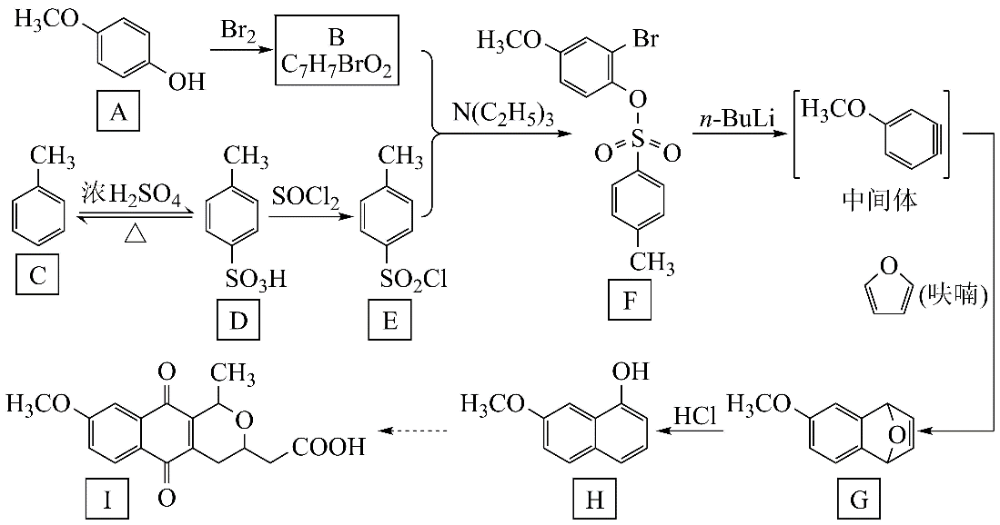
回答下列问题：
（1）B的结构简式为_______；
（2）从F转化为G的过程中所涉及的反应类型是_______、_______；
（3）物质G所含官能团的名称为_______、_______；
（4）依据上述流程提供的信息，下列反应产物J的结构简式为_______；
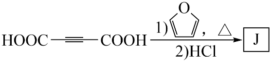
（5）下列物质的酸性由大到小的顺序是_______(写标号)：
①
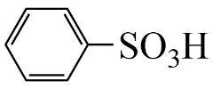
②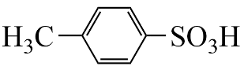
③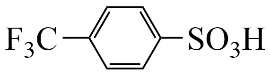
（6）
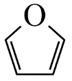
(呋喃)是一种重要的化工原料，其能够发生银镜反应的同分异构体中。除H2C=C=CH-CHO外，还有_______种；
（7）甲苯与溴在FeBr3催化下发生反应，会同时生成对溴甲苯和邻溴甲苯，依据由C到D的反应信息，设计以甲苯为原料选择性合成邻溴甲苯的路线_______(无机试剂任选)。
查看原题图／原始配图
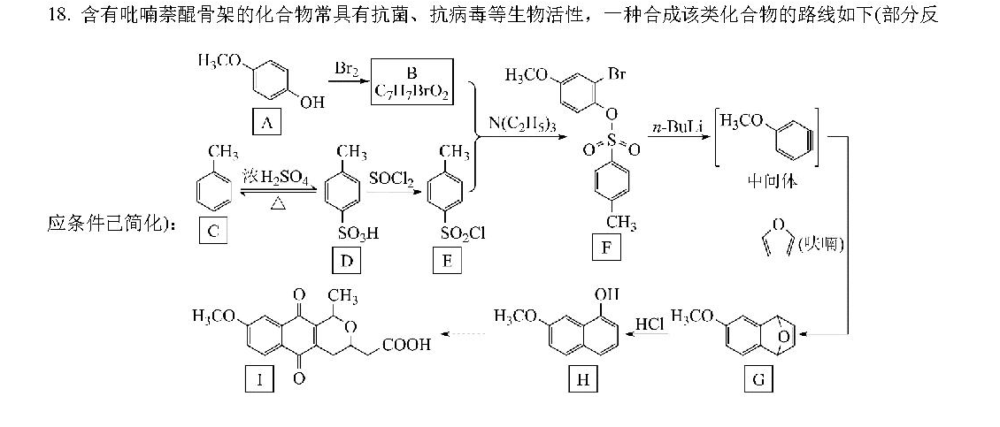
原始配图 1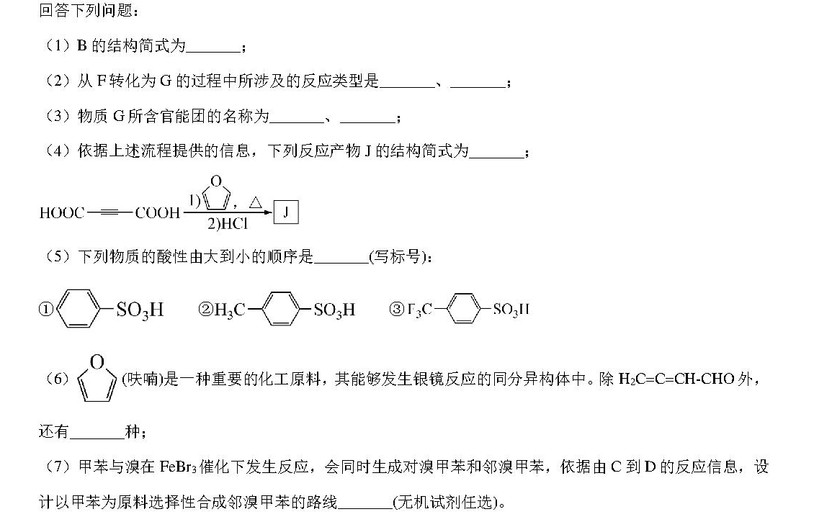
原始配图 2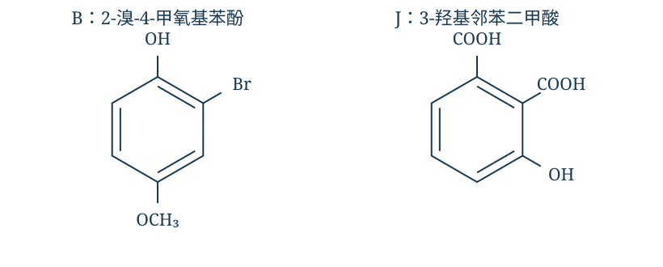
修订前解析配图 3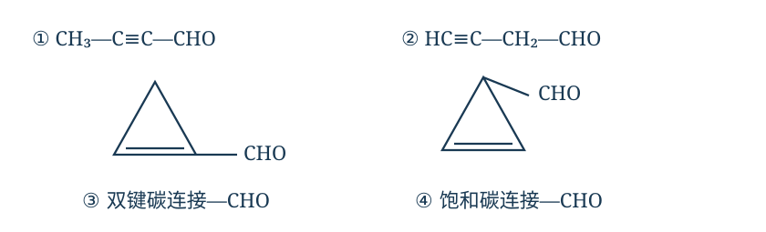
修订前解析配图 4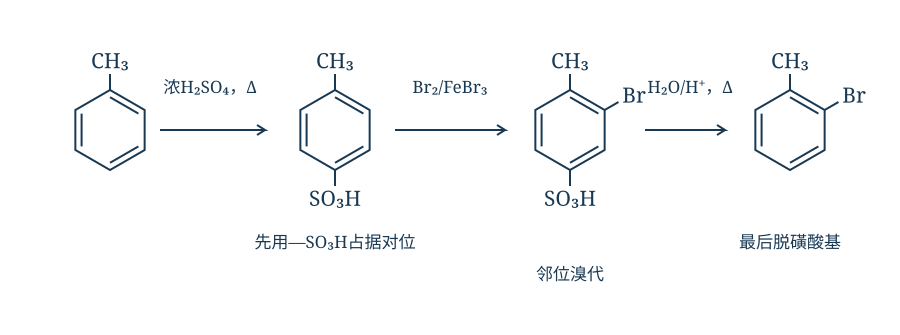
修订前解析配图 5所用高中知识
酚溴代、消去/环加成、官能团、诱导效应、不饱和度与保护基。
读题与思路
A的OH邻位溴代得2-溴-4-甲氧基苯酚B。F消去成苯炔，再与呋喃加成，G含C=C和醚键。炔二羧酸仿同一路线给3-羟基邻苯二甲酸。CF₃吸电子增强磺酸酸性、CH₃供电子削弱，③>①>②。呋喃式C₄H₄O，除给定累积二烯醛还有两种炔醛、两种环丙烯甲醛共4。甲苯先对位磺化临时占位，再邻位溴化、脱磺酸基得邻溴甲苯。
分步解析
- （1）A为对甲氧基苯酚，OH邻位溴代而对位已占，B为2-溴-4-甲氧基苯酚，结构见图。（2）F先消去形成苯炔型中间体，再与呋喃发生加成，填消去、加成。
- （3）G保留碳碳双键，桥氧和甲氧基均为醚键，填碳碳双键、醚键。
- （4）把流程中苯炔的两端换成各带COOH的炔碳，与呋喃加成后酸处理芳构化，得3-羟基邻苯二甲酸J；两个羧基相邻，OH在其邻位，结构见图。
- （5）CF₃吸电子，稳定磺酸根负电荷，增强酸性；CH₃供电子使酸性相对减弱，故③>①>②。
- （6）呋喃C₄H₄O的不饱和度3。含醛基占1，另2可为一条C≡C，得到CH₃C≡CCHO、HC≡CCH₂CHO；或为一个三元环加一条C=C，CHO可连双键碳或饱和环碳，两种。除题已给累积二烯醛外还有4种，见结构图。
- （7）甲苯用浓H₂SO₄、加热先生成对甲苯磺酸；Br₂/FeBr₃在甲基邻位、磺酸基间位溴代；再水/酸加热脱磺酸基，得邻溴甲苯。前后磺化/脱磺化使对位暂时封闭，完整路线见图。
答案
（1）2-溴-4-甲氧基苯酚。（2）消去、加成。（3）碳碳双键、醚键。（4）3-羟基邻苯二甲酸。（5）③>①>②。（6）4。（7）对位磺化→邻位溴代→脱磺酸基。
检查与易错点
不能在甲苯直接溴代后声称只得邻位。异构体计数先核C₄H₄O和不饱和度，避免把普通饱和醛混入。
本题来源：paper2023 · doc-paper
题源与核验说明
- 2023.html旧版解析文件；SHA-256：0e0e55696e1296ac9c110cf3b5fcd9f6013dbe90b9f9f2a9db0744d7b185b661
- 2023年高考真题——化学（湖南卷） Word版无答案.doc原卷文件；SHA-256：7f4d3b24c1583f1bb1a0e740c608b53fab5d46f569c9a11a1b5c68876ed61cf3
- 通通好课：2023湖南卷化学高考真题原卷版同卷题面或参考资料的公开来源；参考答案仅作对照，解析按题设给出推导。
- 自主选拔在线转载：2023湖南化学参考答案同卷题面或参考资料的公开来源；参考答案仅作对照，解析按题设给出推导。
- 化学自习室：键的极性越大，反应活性越高吗？历史讨论资料链接，目前未能重新取得全文，不作为本册结论的独立证据。